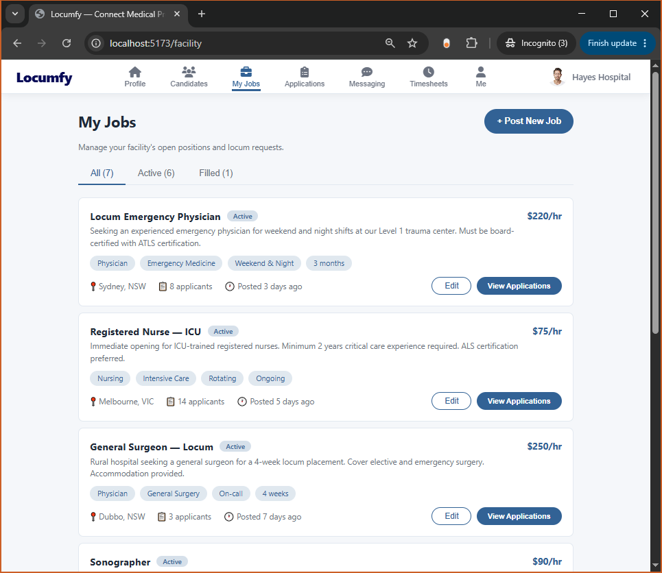
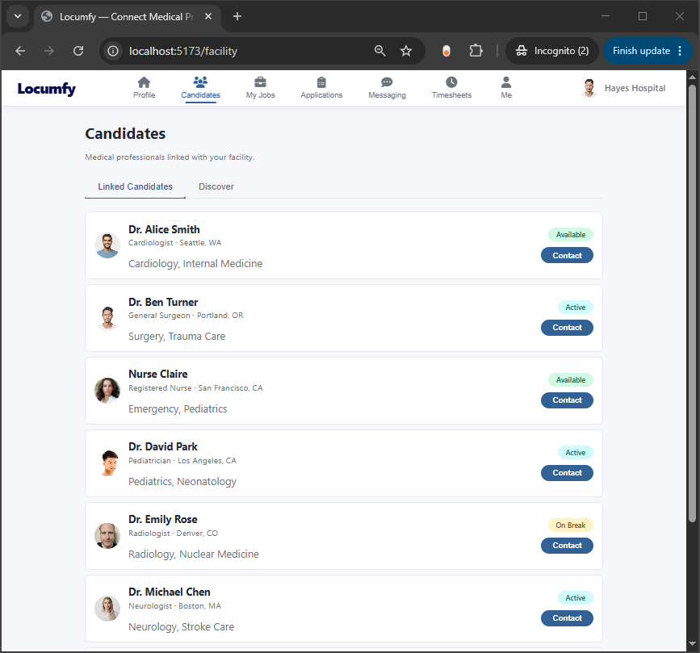
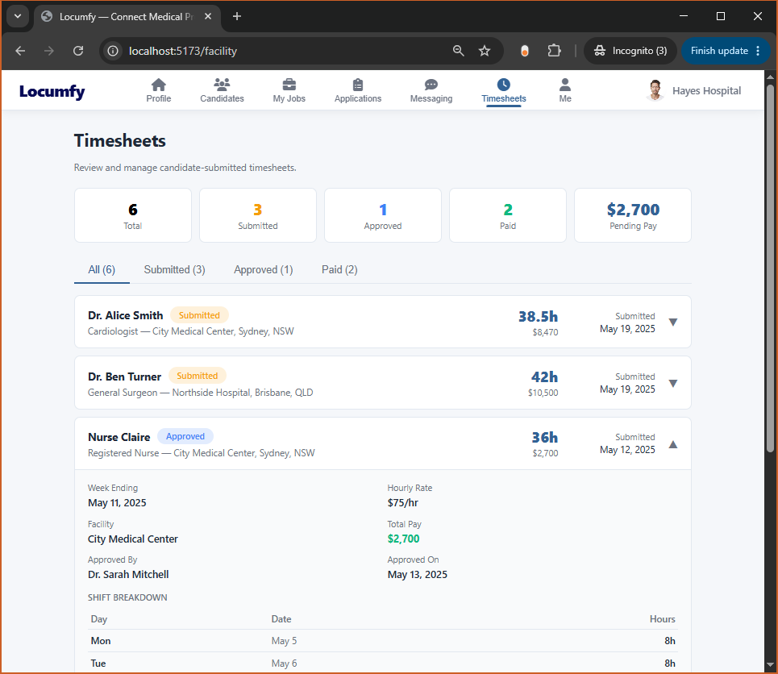

Web Frontend
Nullref.Locumfy.Website — a React 18 + Vite SPA for candidates and employers. No TypeScript, no state library, no CSS framework: Context + hooks + a single hand-written stylesheet.
Stack & structure
vite.config.jssrc/styles.css (~69 KB) with CSS custom properties; light/dark via a data-theme attributeVITE_API_URL → Nullref.Locumfy.WebsiteApi (dev :5236)Under src/: api.js (REST client), App.jsx (router shell),
ThemeContext.jsx, components/ (shared UI incl. the 27 KB
MessagingPanel), pages/public/ (marketing), pages/candidate/,
pages/employer/.
API client (src/api.js)
- JWT in
localStorage(locumfy_token); user object inlocumfy_user; session restored on load. - Verbs
get/getWithBody/post/put/delroute throughrequest(), which attachesAuthorization: Bearer, parses errors intoErrorobjects with.status/.data, and invokes a registered handler on 401 (logout → redirect). download(path, fallbackName)fetches as a blob with the auth header (a plain<a href>can’t send the JWT) and honorsContent-Disposition;upload()does multipart.tryGet/tryPostreturn{ data, live }so pages can show an offline-demo notice instead of crashing.
Routing & roles
Role gating is by user.role (candidate | facility).
/profile/* is the candidate dashboard (redirects facility users to /employer);
/employer/* is the employer dashboard; /in/:candidateId is a public read-only
profile. Each dashboard shell hosts its own nested routes.
Key screens
Candidate section
| Page | Purpose |
|---|---|
Profile.jsx | Dashboard shell + landing feed |
Me.jsx (~58 KB) | Full editable profile: all resume sections, AI summary, PDF/HTML export |
Jobs.jsx | Search / Saved / Applied tabs; apply/save; enforces one-active-job |
MyNetwork.jsx | 3 tabs: Connections / Invitations / Grow; Premium/Credentialed/NPI badges |
Timesheets.jsx | Weekly/monthly list + 7-day editor; submit; PDF/HTML |
Documents.jsx | Upload / download / delete credential documents |
Messaging.jsx | Wraps the shared MessagingPanel |
Employer section
| Page | Purpose |
|---|---|
Candidates.jsx | Candidate search, AI Summary, standardized Resume download |
MyJobs.jsx | Job posting CRUD |
Applications.jsx | Review applications; accept / reject / complete (drives the state machine) |
Timesheets.jsx | Approve / reject candidate timesheets |




Website employer screens (from the marketing captures).
assets/img/ (copied from marketing/). Refresh them when the
UI changes materially. The website and mobile app are meant to stay feature-aligned — see the
Mobile App page.Locumfy platform technical documentation · generated from source analysis · see README for how to keep this current.